Chapter 4
Geometry
The domain in which the fluid flow/heat transfer problem is solved consists of two distinct subdomains.
The first subdomain is that part of the region occupied by fluid, denoted  , while the
second subdomain is that part of the region occupied by a solid, denoted
, while the
second subdomain is that part of the region occupied by a solid, denoted  . These two
subdomains are depicted in Fig. 1.1. The entire domain is denoted as
. These two
subdomains are depicted in Fig. 1.1. The entire domain is denoted as  . The
fluid problem is solved in the domain , while the temperature in the energy equation is
solved in the entire domain; the passive scalars can be solved in either the fluid or the entire
domain.
. The
fluid problem is solved in the domain , while the temperature in the energy equation is
solved in the entire domain; the passive scalars can be solved in either the fluid or the entire
domain.
We denote the entire boundary of as 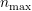, that part of the boundary of which
is not shared by as , and that part of the boundary of  which is shared by
. In addition, are analogously defined. These distinct portions of the domain
boundary are illustrated in Fig.1.1. The restrictions on the domain for Nek5000 are itemized
below.
which is shared by
. In addition, are analogously defined. These distinct portions of the domain
boundary are illustrated in Fig.1.1. The restrictions on the domain for Nek5000 are itemized
below.
- The domain 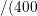 must correspond either to a planar (Cartesian) two-dimensional
geometry, or to the cross-section of an axisymmetric region specified by revolution of the
cross-section about a specified axis, or by a (Cartesian) three-dimensional geometry.
- For two-dimensional and axisymmetric geometries, the boundaries of both subdomains,
and 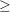, must be representable as (or at least approximated by) the union of straight line
segments, splines, or circular arcs.
- Nek5000 can interpret a two-dimensional image as either a planar Cartesian geometry, or
the cross-section of an axisymmetric body. In the case of the latter, it is assumed that the
y-direction is the radial direction, that is, the axis of revolution is at y=0. Although an
axisymmetric geometry is, in fact, three-dimensional, Nek5000 can assume that the field
variables are also axisymmetric ( that is, do not depend on azimuth, but only , that is,
radius,
 , and 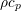 ), thus reducing the relevant equations to "two-dimensional" form.
, and 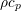 ), thus reducing the relevant equations to "two-dimensional" form.
Fully general three-dimensional meshes generated by other softwares packages can be input to
PRENEK as import meshes.
4.0.1 Moving Geometry
If the imposed boundary conditions allow for motion of the boundary during the solution period (for
example, moving walls, free-surfaces, melting fronts, fluid layers), then the geometry of the computational
domain is automatically considered in Nek5000 as being time-dependent.
For time-dependent geometry problems, a mesh velocity w is defined at each collocation
point of the computational domain (mesh) to characterize the deformation of the mesh. In
the solution of the mesh velocity, the value of the mesh velocity at the moving boundaries is
first computed using appropriate kinematic conditions (for free-surfaces, moving walls and
fluid layers) or dynamic conditions (for melting fronts). On all other external boundaries, the
normal mesh velocity on the boundary is always set to zero. In the tangential direction, either
a zero tangential velocity condition or a zero tangential traction condition is imposed; this
selection is automatically performed by Nek5000 based on the fluid and/or thermal boundary
conditions specified on the boundary. However, under special circumstances the user may want to
override the defaults set by Nek5000, this is described in the PRENEK manual in Section
5.7. If
the zero tangential mesh velocity is imposed, then the mesh is fixed in space; if the zero traction condition
is imposed, then the mesh can slide along the tangential directions on the boundary. The resulting
boundary-value-problem for the mesh velocity is solved in Nek5000 using a elastostatic solver, with the
Poisson ratio typically set to zero. The new mesh geometry is then computed by integrating
the mesh velocity explicitly in time and updating the nodal coordinates of the collocation
points.
Note that the number of macro-elements, the order of the macro-elements and the topology
of the mesh remain unchanged even though the geometry is time-dependent. The use of an
arbitrary-Lagrangian-Eulerian description in Nek5000 ensures that the moving fronts are tracked with the
minimum amount of mesh distortion; in addition, the elastostatic mesh solver can handle moderately large
mesh distortion. However, it is the responsibility of the user to decide when a mesh would become "too
deformed" and thus requires remeshing. The execution of the program will terminate when the mesh
becomes unacceptable, that is, a one-to-one mapping between the physical coordinates and the
isoparametric local coordinates for any macro-element no longer exists. Note that in case of any changes
in the SIZE file, a recompilation is necessary.
4.1 Setting up the geometry
4.1.1 Rectangular geometries
4.1.2 Uniformly Distributed Mesh
Suppose you wish to simulate flow through an axisymmetric pipe, of radius and length .
You estimate that you will need 3 elements in radial (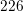) direction, and 5 in the 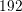 direction, as
depicted in Fig. 4.1. This would be specified by the following input file (called pipe.box) to
genbox:
axisymmetric.rea
2 spatial dimension
1 number of fields
#
# comments: This is the box immediately behind the
# refined cylinder in Ugo’s cyl+b.l. run.
#
#
#========================================================
#
Box 1 Pipe
-5 -3 Nelx Nely
0.0 4.0 1.0 x0 x1 ratio
0.0 0.5 1.0 y0 y1 ratio
v ,O ,A ,W , , BC’s: (cbx0, cbx1, cby0, cby1, cbz0, cbz1)
- The first line of this file supplies the name of an existing 2D .rea file that has the appropriate
run parameters (viscosity, timestep size, etc.). These parameters can be modified later, but it
is important that axisymmetric.rea be a 2D file, and not a 3D file.
- The second line indicates the number of fields for this simulation, in this case, just 1,
corresponding to the velocity field (i.e., no heat transfer).
- The next set of lines just shows how one can place comments into a genbox input file.
- The line that starts with “Box” indicates that a new box is starting, and that the following
lines describe a typical box input. Other possible key characters (the first character of Box,
“B”) are “C” and “M”, more on those later.
- The first line after “Box” specifies the number of elements in the and directions. The
fact that these values are negative indicates that you want genbox to automatically generate
the element distribution along each axis, rather than providing it by hand. (More on this
below.)
- The next line specifies the distribution of the 5 elements in the direction. The mesh
starts at and ends at . The ratio indicates the relative size of each element,
progressing from left to right. Here,
- The next line specifies the distribution of the 3 elements in the direction, starting at
and going to 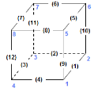. Again, ratio=1.0 indicates that the elements will be of uniform
height.
- The last line specifies boundary conditions on each of the 4 sides of the box:
- Lower-case v indicates that the left () boundary is to be a velocity boundary
condition, with a user-specified distribution determined by routine userbc in the .usr file.
(Upper-case would indicate that the velocity is constant, with values specified in
the .rea file.)
- O indicates that the right (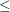) boundary is an outflow boundary – the flow leaves the
domain at the left and the default exit pressure is .
- A indicates that the lower (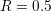) boundary is the axis—this condition is mandatory for
the axisymmetric case, given the fact that the lower domain boundary is at 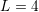,
which corresponds to
 .
.
- W indicates that the upper () boundary is a wall. This would be equivalent to a v or
V boundary condition, with .
4.1.3 Graded Mesh
Suppose you wish to have the mesh be graded, that you have increased resolution near the wall. In this
case you change ratio in the  -specification of the element distribution. For example, changing the 3 lines
in the above genbox input file from
-specification of the element distribution. For example, changing the 3 lines
in the above genbox input file from
-5 -3 Nelx Nely
0.0 4.0 1.0 x0 x1 ratio
0.0 0.5 1.0 y0 y1 ratio
to
-5 -4 Nelx Nely
0.0 4.0 1.0 x0 x1 ratio
0.0 0.5 0.7 y0 y1 ratio
yields the mesh shown in Fig. 4.2.
4.1.4 User-Specified Distribution
You can also specify your own, precise, distribution of element locations. For example, another graded
mesh similar to the one of the preceding example could be built by changing the genbox input file to
contain:
-5 4 Nelx Nely
0.0 4.0 1.0 x0 x1 ratio
0.000 0.250 0.375 0.450 0.500 y0 y1 ... y4
Here, the positive number of elements for the 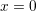 direction indicates that genbox is expecting
Nely+1 values of positions on the  -element distribution line. This is the genbox default,
which explains why it corresponds to Nely 0. The corresponding mesh is shown in Fig.
4.3.
-element distribution line. This is the genbox default,
which explains why it corresponds to Nely 0. The corresponding mesh is shown in Fig.
4.3.
4.1.5 Mesh Modification in Nek5000
For complex shapes, it is often convenient to modify the mesh direction in the simulation
code, Nek5000. This can be done through the usrdat2 routine provided in the .usr file. The
routine usrdat2 is called by nek5000 immediately after the geometry, as specified by the .rea
file, is established. Thus, one can use the existing geometry to map to a new geometry of
interest.
For example, suppose you want the above pipe geometry to have a sinusoidal wall. Let  denote the old geometry, and
denote the old geometry, and  denote the new geometry. For a domain with 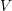,
the following function will map the straight pipe geometry to a wavy wall with amplitude
denote the new geometry. For a domain with 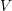,
the following function will map the straight pipe geometry to a wavy wall with amplitude  , wavelength
, wavelength
 :
:
Note that, as , the perturbation, , goes to zero. So, near the axis, the mesh
recovers its original form.
In nek5000, you would specify this through usrdat2 as follows
subroutine usrdat2
include ’SIZE’
include ’TOTAL’
real lambda
ntot = nx1*ny1*nz1*nelt
lambda = 3.
A = 0.1
do i=1,ntot
argx = 2*pi*xm1(i,1,1,1)/lambda
ym1(i,1,1,1) = ym1(i,1,1,1) + ym1(i,1,1,1)*A*sin(argx)
enddo
param(59) = 1. ! Force nek5 to recognize element deformation.
return
end
Note that, since nek5000 is modifying the mesh, postx will not recognize the current mesh unless you tell
it to, because postx looks to the .rea file for the mesh geometry. The only way for nek5000 to communicate
the new mesh to postx is via the .fld file, so you must request that the geometry be dumped to the .fld file.
This is done by modifying the OUTPUT SPECIFICATIONS, which are found near the bottom of the .rea
file. Specifically, change
***** OUTPUT FIELD SPECIFICATION *****
6 SPECIFICATIONS FOLLOW
F COORDINATES
T VELOCITY
T PRESSURE
T TEMPERATURE
F TEMPERATURE GRADIENT
0 PASSIVE SCALARS
to
***** OUTPUT FIELD SPECIFICATION *****
6 SPECIFICATIONS FOLLOW
T COORDINATES <------ CHANGE HERE
T VELOCITY
T PRESSURE
T TEMPERATURE
F TEMPERATURE GRADIENT
0 PASSIVE SCALARS
The result of above changes is shown in Fig. 4.4.
4.1.6 Cylindrical/Cartesian-transition Annuli
An updated version of genb6, known as genb7, is currently under development and designed to
simply/automate the construction of cylindrical annuli, including basic transition-to-Cartesian elements.
More sophisticated transition treatments may be generated using the GLOBAL REFINE options in prenek
or through an upgrade of genb7, as demand warrants. Example 2D and 3D input files are provided in the
nek5000/doc files box7.2d and box7.3d. Figure 4.5a shows a 2D example generated using the box7.2d input
file, which reads:
x2d.rea
2 spatial dimension
1 number of fields
#
# comments
#
#
#========================================================
#
Y cYlinder
3 -24 1 nelr,nel_theta,nelz
.5 .3 x0,y0 - center of cylinder
ccbb descriptors: c-cyl, o-oct, b-box (1 character + space)
.5 .55 .7 .8 r0 r1 ... r_nelr
0 1 1 theta0/2pi theta1/2pi ratio
v ,W ,E ,E , bc’s (3 characters + comma)
An example of a mesh is shown in Fig. 4.5a. The mesh has been quad-refined once with oct-refine option of
prenek. The 3D counterpart to this mesh could joined to a hemisphere/Cartesian transition built with the
spherical mesh option in prenek.
4.2 Extrusion/Mirroring
4.2.1 Building Extruded Meshes with n2to3
In nek5000/tools, there is a code n2to3.f that can be compiled with your local fortran compiler (preferably
not g77). By running this code, you can extend two dimensional domains to three dimensional ones with a
user-specified number of levels in the z-direction. Such a mesh can then be modified using the mesh
modification approach. Assuming you have a valid two-dimensional mesh, n2to3 is straightforward
to run. Below is a typical session, upon typing n2to3 the user is prompted at the command
line
Input old (source) file name:
h2e
Input new (output) file name:
h3e
input number of levels: (1, 2, 3,... etc.?):
16
input z min:
0
input z max:
16
input gain (0=custom,1=uniform,other=geometric spacing):
1
This is for CEM: yes or no:
n
Enter Z (5) boundary condition (P,v,O):
v
Enter Z (6) boundary condition (v,O):
0
this is cbz: v O <---
320 elements written to h3e.rea
FORTRAN STOP
In this context CEM stands for computational electromagnetics, a spin-off of the original Nek5000
code.
4.3 Boundary and initial conditions
4.3.1 Boundary Conditions
The boundary conditions for the governing equations given in the previous section are now
described.
The boundary conditions can be imposed in various ways:
- when the mesh is generated with genbox, as will be explained in Section 4.1.6
- when the .rea file is read in PRENEK or directly in the .rea file
- directly in the .rea file
- in the subroutine userbc
The general convention for boundary conditions in the .rea file is
- upper case letters correspond to Primitive boundary conditions, as given in Table ??
- lower case letters correspond to user defined boundary conditions, see Table ??
Since there are no supporting tools that will correctly populate the .rea file with the appropriate
values, temperature, velocity, and flux boundary conditions are typically lower case and values must be
specified in the userbc subroutine in the .usr file.
4.3.2 Fluid Velocity
Two types of boundary conditions are applicable to the fluid velocity : essential (Dirichlet) boundary
condition in which the velocity is specified; natural (Neumann) boundary condition in which the traction is
specified. For segments that constitute the boundary  , see Fig. 1.1, one of these two types of
boundary conditions must be assigned to each component of the fluid velocity. The fluid boundary
condition can be all Dirichlet if all velocity components of 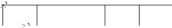 are specified; or it can be all Neumann if all
traction components
, see Fig. 1.1, one of these two types of
boundary conditions must be assigned to each component of the fluid velocity. The fluid boundary
condition can be all Dirichlet if all velocity components of 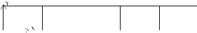 are specified; or it can be all Neumann if all
traction components ![T
t = [− pI + μ(∇u + (∇u ) )]⋅n](index194x.png) , where
, where  is the identity tensor,
is the identity tensor,  is the unit
normal and
is the unit
normal and  is the dynamic viscosity, are specified; or it can be mixed Dirichlet/Neumann if Dirichlet
and Neumann conditions are selected for different velocity components. Examples for all Dirichlet, all
Neumann and mixed Dirichhlet/Neumann boundaries are wall, free-surface and symmetry, respectively. If
the nonstress formulation is selected, then traction is not defined on the boundary. In this
case, any Neumann boundary condition imposed must be homogeneous; i.e., equal to zero. In
addition, mixed Dirichlet/Neumann boundaries must be aligned with one of the Cartesian
axes.
is the dynamic viscosity, are specified; or it can be mixed Dirichlet/Neumann if Dirichlet
and Neumann conditions are selected for different velocity components. Examples for all Dirichlet, all
Neumann and mixed Dirichhlet/Neumann boundaries are wall, free-surface and symmetry, respectively. If
the nonstress formulation is selected, then traction is not defined on the boundary. In this
case, any Neumann boundary condition imposed must be homogeneous; i.e., equal to zero. In
addition, mixed Dirichlet/Neumann boundaries must be aligned with one of the Cartesian
axes.
For flow geometry which consists of a periodic repetition of a particular geometric unit, the periodic
boundary conditions can be imposed, as illustrated in Fig. 1.1.
|
|
|
|
| Identifier | Description | Parameters | No of Parameters |
|
|
|
|
|
|
|
|
| P | periodic | periodic element and face | 2 |
| V | Dirichlet velocity | u,v,w | 3 |
| O | outflow | - | 0 |
| W | wall (no slip) | - | 0 |
| F | flux | flux | 1 |
| SYM | symmetry | - | 0 |
| A | axisymmetric boundary | - | 0 |
| MS | moving boundary | - | 0 |
| ON | Outflow, Normal | - | 0 |
| E | Interior boundary | Neighbour element ID | 2 |
|
|
|
|
| |
Table 4.1: Primitive boundary conditions (flow velocity)
|
|
| Identifier | Description |
|
|
|
|
| v | user defined Dirichlet velocity |
| t | user defined Dirichlet temperature |
| f | user defined flux |
|
|
| |
Table 4.2: User defined boundary conditions (flow velocity)
The open(outflow) boundary condition ("O") arises as a natural boundary condition from the
variational formulation of Navier Stokes. We identify two situations
- In the non-stress formulation, open boundary condition (’Do nothing’)
- In the stress formulation, free traction boundary condition
- the symmetric boundary condition ("SYM") is given as
where is the normal vector and the tangent vector. If the normal and tangent vector are not
aligned with the mesh the stress formulation has to be used.
- the periodic boundary condition ("P") needs to be prescribed in the .rea file since it
already assigns the last point to first via 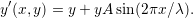, where is the periodic
length.
- the wall boundary condition ("W") corresponds to .
For a fully-developed flow in such a configuration, one can effect great computational efficiencies by
considering the problem in a single geometric unit (here taken to be of length L), and requiring
periodicity of the field variables. Nek5000 requires that the pairs of sides (or faces, in the case
of a three-dimensional mesh) identified as periodic be identical (i.e., that the geometry be
periodic).
For an axisymmetric flow geometry, the axis boundary condition is provided for boundary
segments that lie entirely on the axis of symmetry. This is essentially a symmetry (mixed
Dirichlet/Neumann) boundary condition in which the normal velocity and the tangential traction are set
to zero.
For free-surface boundary segments, the inhomogeneous traction boundary conditions involve both the
surface tension coefficient 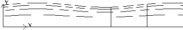 and the mean curvature of the free surface.
Passive scalars and Temperature
The three types of boundary conditions applicable to the temperature are: essential (Dirichlet) boundary
condition in which the temperature is specified; natural (Neumann) boundary condition in which the heat
flux is specified; and mixed (Robin) boundary condition in which the heat flux is dependent on the
temperature on the boundary. For segments that constitute the boundary (refer
to Fig. 2.1), one of the above three types of boundary conditions must be assigned to the
temperature.
The two types of Robin boundary condition for temperature are : convection boundary conditions
for which the heat flux into the domain depends on the heat transfer coefficient  and
the difference between the environmental temperature
and
the difference between the environmental temperature  and the surface temperature;
and radiation boundary conditions for which the heat flux into the domain depends on the
Stefan-Boltzmann constant/view-factor product and the difference between the fourth power
of the environmental temperature and the fourth power of the surface temperature.
and the surface temperature;
and radiation boundary conditions for which the heat flux into the domain depends on the
Stefan-Boltzmann constant/view-factor product and the difference between the fourth power
of the environmental temperature and the fourth power of the surface temperature.
|
|
|
|
| Identifier | Description | Parameters | No of Parameters |
|
|
|
|
|
|
|
|
| T | Dirichlet temperature/scalar | value | 1 |
| O | outflow | - | 0 |
| P | periodic boundary | - | 0 |
| I | insulated (zero flux) for temperature | | 0 |
|
|
|
|
| |
Table 4.3: Primitive boundary conditions (Temperature and Passive scalars)
|
|
| Identifier | Description |
|
|
|
|
| t | user defined Dirichlet temperature |
| c | Newton cooling |
| f | user defined flux |
|
|
| |
Table 4.4: User defined boundary conditions (Temperature and Passive scalars)
The boundary conditions for the passive scalar fields are analogous to those used for the temperature
field. Thus, the temperature boundary condition menu will reappear for each passive scalar field so
that the user can specify an independent set of boundary conditions for each passive scalar
field.
4.3.3 Internal Boundary Conditions
In the spatial discretization, the entire computational domain is subdivided into macro-elements, the
boundary segments shared by any two of these macro-elements in 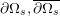 and are denoted as internal
boundaries. For fluid flow analysis with a single-fluid system or heat transfer analysis without
change-of-phase, internal boundary conditions are irrelevant as the corresponding field variables on these
segments are part of the solution. However, for a multi-fluid system and for heat transfer analysis with
change-of-phase, special conditions are required at particular internal boundaries, as described in the
following.
For a fluid system composes of multiple immiscible fluids, the boundary (and hence the identity) of
each fluid must be tracked, and a jump in the normal traction exists at the fluid-fluid interface if the
surface tension coefficient is nonzero. For this purpose, the interface between any two fluids of different
identity must be defined as a special type of internal boundary, namely, a fluid layer; and the associated
surface tension coefficient also needs to be specified.
In a heat transfer analysis with change-of-phase, Nek5000 assumes that both phases exist at the start
of the solution, and that all solid-liquid interfaces are specified as special internal boundaries, namely, the
melting fronts. If the fluid flow problem is considered, i.e., the energy equation is solved in conjunction
with the momentum and continuity equations, then only the common boundary between the fluid and the
solid (i.e., all or portion of  in Fig. 1.1) can be defined as the melting front. In this case,
segments on that belong to the dynamic melting/freezing interface need to be specified by
the user. Nek5000 always assumes that the density of the two phases are the same (i.e., no
Stefan flow); therefore at the melting front, the boundary condition for the fluid velocity is the
same as that for a stationary wall, that is, all velocity components are zero. If no fluid flow is
considered, i.e., only the energy equation is solved, then any internal boundary can be defined as a
melting front. The temperature boundary condition at the melting front corresponds to a
Dirichlet condition; that is, the entire segment maintains a constant temperature equal to the
user-specified melting temperature
in Fig. 1.1) can be defined as the melting front. In this case,
segments on that belong to the dynamic melting/freezing interface need to be specified by
the user. Nek5000 always assumes that the density of the two phases are the same (i.e., no
Stefan flow); therefore at the melting front, the boundary condition for the fluid velocity is the
same as that for a stationary wall, that is, all velocity components are zero. If no fluid flow is
considered, i.e., only the energy equation is solved, then any internal boundary can be defined as a
melting front. The temperature boundary condition at the melting front corresponds to a
Dirichlet condition; that is, the entire segment maintains a constant temperature equal to the
user-specified melting temperature  throughout the solution. In addition, the volumetric
latent heat of fusion
throughout the solution. In addition, the volumetric
latent heat of fusion  for the two phases, which is also assumed to be constant, should be
specified.
for the two phases, which is also assumed to be constant, should be
specified.
4.3.4 Initial Conditions
For time-dependent problems Nek5000 allows the user to choose among the following types of initial
conditions for the velocity, temperature and passive scalars:
- Zero initial conditions: default; if nothing is specified.
- Fortran function: This option allows the user to specify the initial condition as a fortran
function, e.g., as a function of , 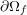 and
 .
.
- Presolv: For a temperature problem the presolv option gives the steady conduction solution
as initial condition for the temperature. For a fluid problem this option can give the steady
Stokes solution as the initial condition for the velocity provided that the classical splitting
scheme is not used.
- Restart: this option allows the user to read in results from an earlier simulation, and use these
as initial conditions.
A tabulated summary of the compatibility of these initial condition options with various other solution
strategies/parameters is given in the appendix.
4.4 Mesh Partioning for Parallel Computing
Genmap is spectral graph partitioning tool, similar to e.g. METIS, which partitions the graph associated
to the mesh to assure optimal communication time in HPC applications. Let us consider a simple mesh
such as the one in Fig. 4.6. The vertices are distributed in a random fashion, which is the way
they may be provided by some mesh generator. Let us assume the vertices are here given
as
The geometry is already stored in the .rea file by the point coordinates, and not vertex numbers
| 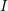 | | | |
 -1. -1. | 0. | 0. | -1. |
 0. 0. | 0. | 1. | 1. |
| | | | |
| 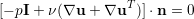 1. | 1. | 0. | 0. |
| 0. | 1. | 1. | 0. |
| | | | |
 0. 0. | -1. | -1. | 0. |
| 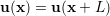 2 . | 2. | 1. | 1. |
| |
Let us a regard the mesh in Fig. 4.6 as a graph of vertices and edges,  . We
define the Laplacian matrix associated to a graph as . We define as the degree of a node
the number of incident edges, e.g. in Fig. 4.6
. We
define the Laplacian matrix associated to a graph as . We define as the degree of a node
the number of incident edges, e.g. in Fig. 4.6  and
and  .
.
 | (4.10) |
Properties of 
 symmetric
symmetric
- the unit vector
![e = [1,...1] ∈ N (L(G ))](index252x.png) is in the nullspace of the Laplacian matrix
is in the nullspace of the Laplacian matrix
- 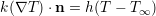, i.e. all the eigenvalues of
 are positive except
are positive except  corresponding
to the unit vector
corresponding
to the unit vector
 if the graph is connected,
if the graph is connected,  is also called the algebraic connectivity of the
graph
is also called the algebraic connectivity of the
graph
The main ides of the spectral bisection algorithm is
compute \(v_2\) eigenvector corresponding to \(\lambda_2(L(G))\)
for i=1,N
if v_2(i) < 0 put vertex \(V_i\) in N_{-}
else put vertex \(V_i\) in N_{-}
The eigenvectors and eigenvalues are computed using Lanczos’s algorithm. These steps are repeated
recursively on each of the two branches of the graph . This is possible since according to Fiedler’s
theorems the graph 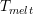 is connected, 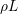 connected only if no  , and for each subgraph
, and for each subgraph
 the algebraic connectivities satisfy
the algebraic connectivities satisfy  .
.
To run the genmap code be sure that the Nek tools are up-to-date and compiled. At command line
type: genmap NOTE-If the executables for the tools were not placed in the bin directory(default), include
the path to the genmap executable. We give here the output for the .rea file in the Kovasznay
example
Input (.rea) file name:
kov
Input mesh tolerance (default 0.2):
NOTE: smaller is better, but generous is more forgiving for bad meshes.
0.05
reading .rea file data ...
start locglob_lexico: 8 960 7680 0.10000000000000001
locglob: 1 1 7680
.....
locglob: 3 1254 7680
done locglob_lexico: 1254 1254 7680 8
start periodic vtx: 960 1254
done periodic vtx
start rec_bisect: 960
done: 0.1%
.....
done: 99.4%
done rec_bisect
writing kov.map
The user is prompted for .rea file name and should enter only the prefix of the .rea file. The user is
prompted for mesh tolerance value. Typically a value of .05 is sufficient. Increasing or decreasing this value
should make very little difference in the mesh generation. However, if given an error from genmap, the
tolerance may need to be made slightly more generous.
A successful genmap run will produce a .map file with the proper processor decomposition.
NOTE: For large element counts, it is not uncommon for genmap to be produce a few disconnected
sets. These sets are typically under 7 elements large and will not affect optimization of the
NEK5000 run. If a disconnected set is produced, genmap will output the following warning to
stdout.
not connected N0 NEL Nsets Nlarge sets
Here, N0 is the number of elements disconnected from the set of NEL elements, Nsets is the counter of
disconnected sets found, and Nlarge sets is the number of sets greater than 64 elements in size. Nlarge
sets should always be 0. If not, please contact someone on the developer team so we can be sure to have a
more optimal partition of your mesh.
Genmap outputs an ordered set of numbers which are organized as follows Line number 1 contains the
header nel, nactive, depth, d2, npts, nrank, noutflow
- nel number of elements
- nactive nrank-noutflow
- depth floor(log2(nel))
- d2

- npts number of corner points (nel*4 in 2D, nel*8 in 3D)
- nrank number of unique corner points
- noutflow number of outflows (not used anymore, is zero)
For the Kovasnay flow on an 8 element mesh with periodic boundary conditions we have 8 12 3 8 32
12 0
Next we have the data (one line per element, listed in order of global element number) ==== 6 12 11
6 5
This means that elemnt one (since we are on the first line) belongs to group 6, and this element is given
by vertices in unique ordering. The vertices are ordered in symmetric ordering (starting at
1)
3 - 4 | | 1 - 2
To distribute amongst processors, one just takes as many consecutive processors as one
wants.


 the tangent vector. If the normal and tangent vector are not
aligned with the mesh the stress formulation has to be used.
the tangent vector. If the normal and tangent vector are not
aligned with the mesh the stress formulation has to be used.